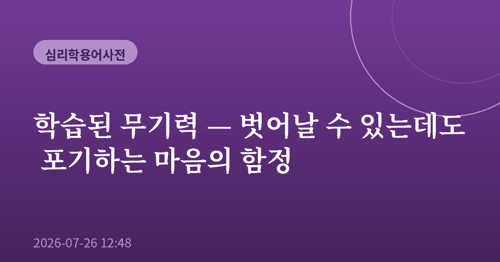
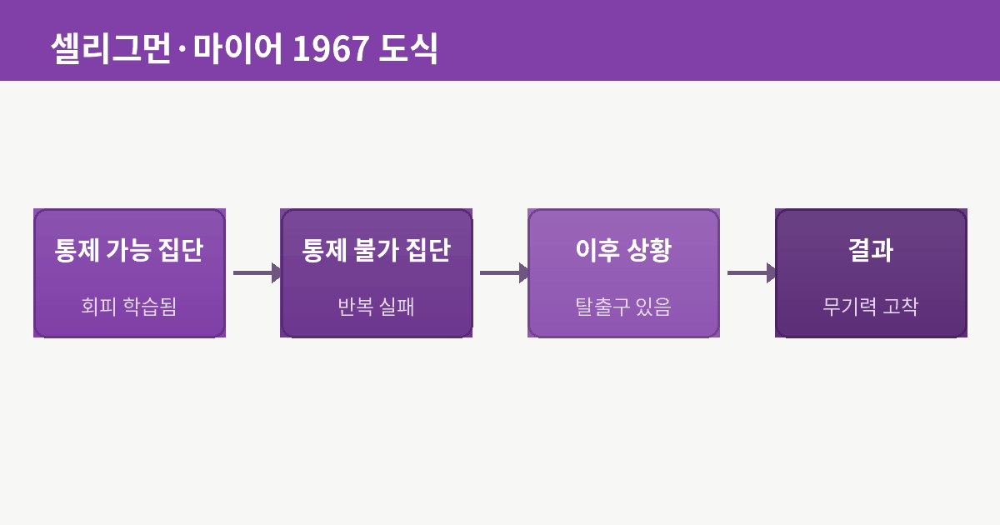
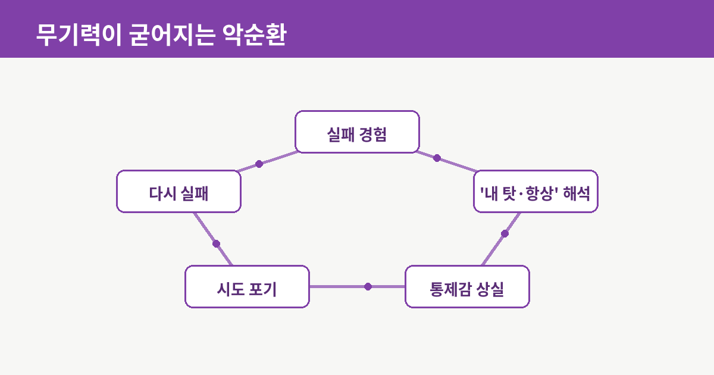
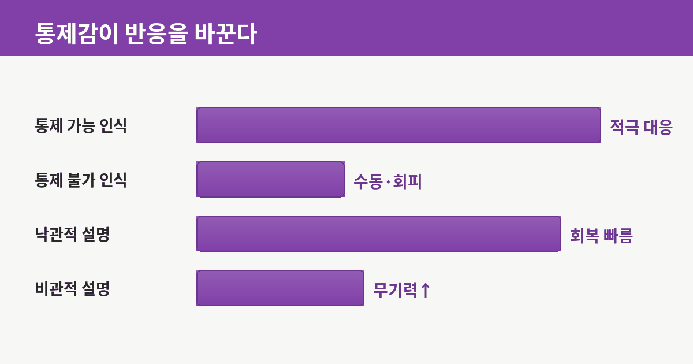
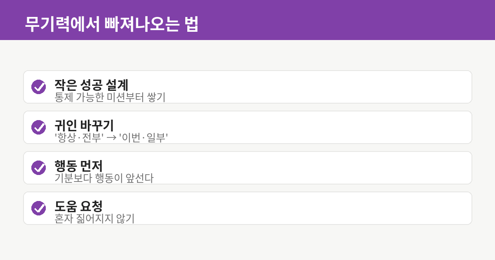

학습된 무기력 — 벗어날 수 있는데도 포기하는 마음의 함정

학습된 무기력(Learned Helplessness)이란, 자신의 노력으로는 상황을 바꿀 수 없다는 경험이 반복될 때, 실제로는 벗어날 수 있는 상황이 와도 시도조차 하지 않게 되는 심리 상태를 말합니다. 핵심은 '무능력'이 아니라 '학습'입니다. 무기력은 타고난 성격이 아니라 경험을 통해 배워진 것이며, 배워진 것이기에 다시 바꿀 수도 있다는 뜻이 여기에 담겨 있습니다.

1967년, 하나의 실험에서 시작되다
이 개념은 1967년 심리학자 마틴 셀리그먼과 스티브 마이어의 동물 실험에서 비롯되었습니다. 연구진은 대상을 세 집단으로 나눴습니다. 한 집단은 스스로 행동해서 불쾌한 자극을 멈출 수 있었고, 다른 집단은 무엇을 해도 자극을 멈출 수 없었으며, 마지막은 비교를 위한 집단이었습니다. 이후 모두를 '조금만 움직이면 자극을 피할 수 있는' 새로운 상황에 두었습니다. 그런데 앞서 '무엇을 해도 소용없던' 집단은, 이제 탈출구가 분명히 있는데도 대부분 그 자리에 웅크린 채 시도하지 않았습니다. 통제 불가능의 경험이 '어차피 안 된다'는 학습으로 굳어진 것입니다. 셀리그먼은 훗날 이 무기력의 반대편에서 '낙관성' 연구로 나아가며 긍정심리학의 토대를 놓았습니다.
무기력은 어떻게 굳어지는가
학습된 무기력의 무서운 점은 그것이 하나의 악순환으로 작동한다는 데 있습니다. 실패를 겪는 것 자체보다, 그 실패를 어떻게 해석하느냐가 결정적입니다. 셀리그먼은 이를 '설명 양식'이라 불렀습니다. 실패를 '내 탓이고(개인적), 항상 그럴 것이며(영속적), 모든 일이 그렇다(전반적)'고 해석하는 사람은 무기력에 훨씬 쉽게 빠집니다. 이런 해석은 통제감을 앗아가고, 통제감을 잃으면 시도를 멈추고, 시도하지 않으니 성공 경험도 없어 다시 '역시 안 된다'는 믿음이 강화됩니다.

일상 속의 학습된 무기력
이 현상은 실험실 밖 어디에나 있습니다. 몇 번의 도전에서 번번이 미끄러진 취업 준비생이 새 공고를 봐도 '해봤자'라며 지원서를 닫는 순간, 반복된 다툼 끝에 '말해도 안 바뀐다'며 대화를 포기하는 관계, 성적이 오르지 않는 경험이 쌓여 '나는 원래 이 과목은 안 된다'고 단정하는 학생. 모두 능력이 없어서가 아니라, 통제할 수 없다는 믿음을 학습한 결과입니다. 심지어 실제로는 상황이 이미 바뀌어 길이 열렸는데도, 마음의 문이 먼저 닫혀 그 길이 보이지 않게 됩니다.

빠져나오는 실마리
다행히 무기력이 학습된 것이라면, 그 반대도 학습할 수 있습니다. 가장 효과적인 출발점은 '작은 통제감'을 회복하는 것입니다. 거창한 목표 대신, 반드시 해낼 수 있는 아주 작은 과제를 정해 성공을 직접 경험하는 것입니다. 오늘 방 한 칸 정리하기, 산책 10분 하기처럼요. 동시에 설명 양식을 바꾸는 연습이 필요합니다. '항상·전부·내 탓'이라는 자동적 해석을 '이번엔·일부는·상황도 있었다'로 의식적으로 고쳐 말하는 것만으로도 통제감의 회로가 조금씩 되살아납니다. 그리고 무엇보다, 기분이 나아지길 기다렸다가 움직이는 게 아니라 먼저 작게 움직이는 편이 낫습니다. 행동이 감정을 끌어오는 경우가 많기 때문입니다.

정리하며
학습된 무기력은 우리에게 두 가지를 동시에 일러줍니다. 하나는 사람을 무너뜨리는 것이 실패 자체가 아니라 '통제할 수 없다는 믿음'이라는 것, 다른 하나는 그 믿음이 학습된 이상 다시 쓸 수 있다는 것입니다. 지금 어떤 일 앞에서 '해봤자'라는 말이 먼저 떠오른다면, 그것이 사실인지 아니면 오래전에 배워둔 마음의 습관인지 한 번 되물어볼 만합니다. 문은 생각보다 자주, 이미 열려 있습니다.